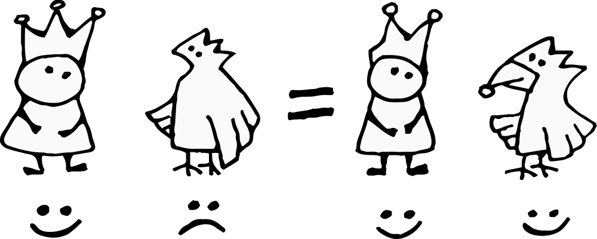
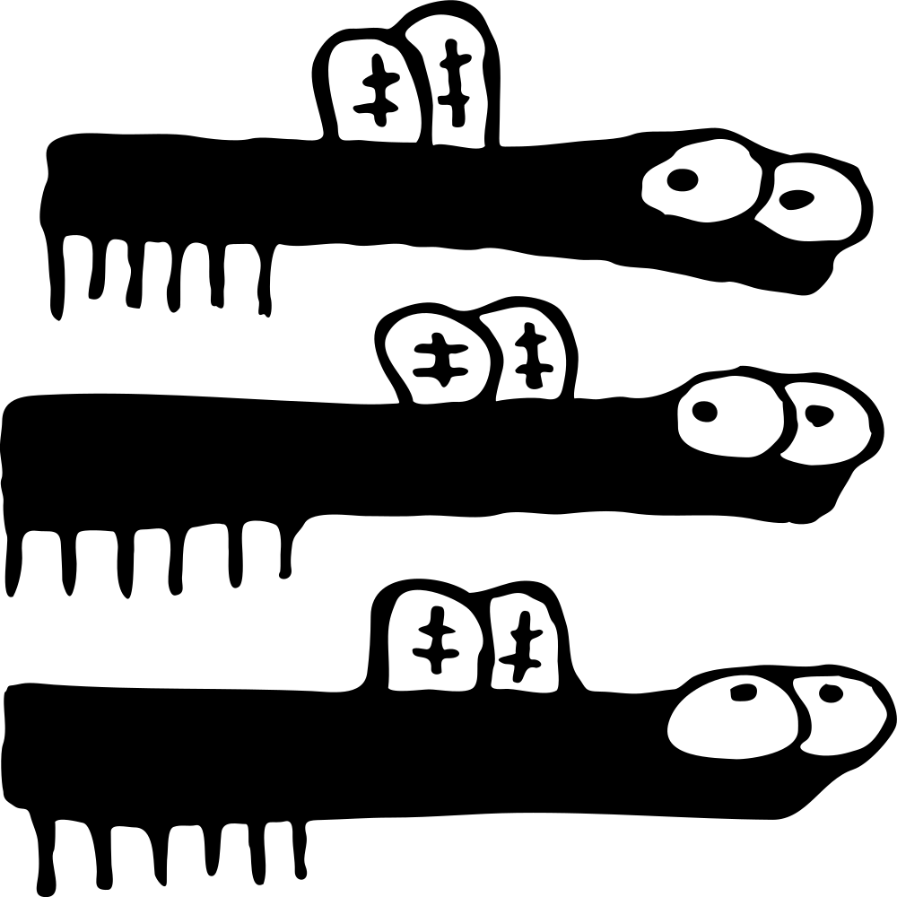

Он выглядит картинкой, работает как функция и ведёт себя как литературный персонаж. Надо заметить, что в каждом случае, король Апп служит эталоном доблести и благородства. На то он и король.
Королевская корона слегка повреждена, об этом рассказывает легенда...
Легенда о короне
24500 лет до н.э.
Супервулканами называют большие извержения. Такие, что могут повлиять на климат и изменить мир. Рождаются супервулканы раз в сто тысяч лет. Последнего звали Таупо, он жил неподалёку от Новой Зеландии почти 30 тысяч лет назад.
Король прогуливался вокруг вулкана, чтобы написать о нём в энциклопедии. На прогулке встретил Чёрного Орла.
Орёл был чёрен от мрачных мыслей и шёл прыгать в жерло вулкана. Причиной был недавний спор с дятлом у кого клюв крепче. Хитрый дятел предложил испытание в котором орёл проиграл да ещё и клюв сломал. Вместе с клювом, орёл потерял всякую надежду на счастливую жизнь.
Встреча на фоне извержения вулкана Таупо, иллюстрация к легенде.
Король выслушал беду и смахнул слезу, потому что птичку жалко. Отломал кусок своей королевской короны, и смастерил из куска новый орлиный клюв. Хороший получился клюв — ¹) красивый,²) удобный,³) прочный.
Орёл обрадовался, и жили они долго и счастливо.

Красивая легенда прославила корону среди прочих символов. А крепкие связи с королём, помогли получить должность главного логотипа.
Получив должность, логотип отправился в угол экрана — это почётное место традиционно отдаётся главному символу. По дороге в новые владения логотип встретил и захватил навигационное меню.
Такой внезапный поступок, одобренный королём, изрядно рассердил другой уважаемый символ — иконку по прозвищу Гамбургер, чьи предки долгое время контролировали меню. Гамбургер поднял восстание, но сил хватило только на завоевание небольшой области на востоке.

Смирившись со своим положением, Гамбургер поселился на завоёванных землях и занялся производством драмы для повествования.
Драма удерживает внимание, что весьма кстати при больших объёмах информации. Героем конфликтной ситуации может стать кто угодно — король, банкир или иконка. Даже
цвет
может бросить дерзкий вызов контрастному окружению, чтобы добавить острых ощущений.
В перерывах между драматическими набегами, барон Гамбургер занимался наукой и составлял описание мира.